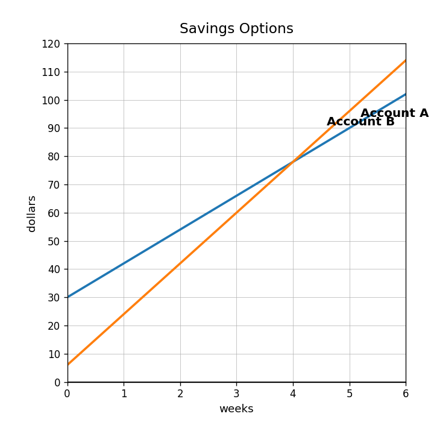
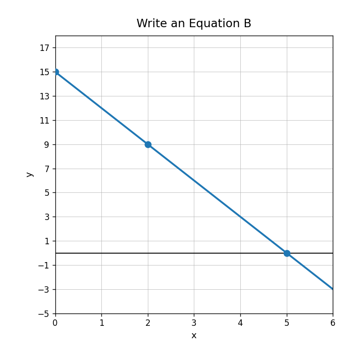

Relationship A has equation $y=2x+30$. Relationship B has equation $y=6x+4$. Which has the greater rate of change?
Which relationship has the greater starting value: $C=14m+5$ or $D=9m+18$?
Use the savings graph and the table. Which option grows faster each week?

| week | 0 | 1 | 2 | 3 |
|---|---|---|---|---|
| Option C | 20 | 35 | 50 | 65 |
Two rentals are modeled by $A=25+10h$ and $B=5+15h$. Explain which is cheaper at the start, which grows faster, and what information you need to decide after several hours.
For $y=-3x+15$, identify the slope and starting value.
Write an equation for the line shown.

In the model $C=20+8t$, what could $t$ represent if $C$ is total cost?
A plan starts at $35 and adds $5 per month. Which expression models the cost after $m$ months: $35m+5$ or $5m+35$?
Write a linear equation for the table.
| $x$ | 0 | 1 | 2 | 3 |
|---|---|---|---|---|
| $y$ | 11 | 16 | 21 | 26 |
A candle is 18 cm tall and burns 2 cm each hour. Write a model for height $h$ after $t$ hours.
A student writes $y=4x+10$ for a line with slope 10 and $y$-intercept 4. Identify and correct the error.
Create a real-world context that could be represented by $y=-5x+60$. Explain what each number means.
Identify the constant term in $12n-7$.
Use the distributive property: $$5(x+8)$$
Simplify and identify the terms combined: $$3a+9+4a-2$$
A student says $2(x+6)$ and $2x+6$ are equivalent. Critique the statement.